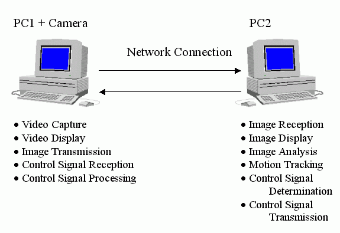

Contents
- Summary
- Introduction
- Design & Specification
- Implementation & Testing
- Project Management
- Conclusions
- Appendix
- Bibliography
©2000-2001 Adrian Banks
Last Updated : 18th May 2001
Last Updated : 18th May 2001
Overview
In today's modern age, Closed-Circuit Television (CCTV) cameras are located in town centres, parks, car parks, airports, railway stations and many other public places. These CCTV cameras are controlled by the security staff monitoring the video feed produced. Since the CCTV cameras have a limited field of vision, they must be manually rotated and positioned to monitor any events that take place outside of this field of vision. This has many implications on whether events (for example, a mugging in a town centre) are caught on camera since a human must still do the job of controlling the orientation of the camera.
An automated system whereby the camera could move itself to track an object moving out of its field of vision would eliminate the problem of an unmanned camera losing sight of events. This would also prove more reliable at night when there is less security staff to monitor all of the cameras.
A system capable of detecting motion and tracking it in real time could also be applied to many other areas of technology. Cameras mounted on a robot could be used to give the robot a kind of 'artificial intelligence' to enable it to interact with moving objects in its surroundings. Combined with a memory of the previous positions of an object that is being tracked, a system could predict the next movements of the object to provide some kind of intelligent motion prediction system for use in aircraft, for example
Choice Of Platform And Language
Before coding commenced, a suitable target operating system had to be chosen to ensure compatibility from the start.
"Microsoft Windows®" has become widespread throughout the world and is by far the most common operating system in use today. Because of this, Windows® (and in particular the latest releases of "Windows 98®" and "Windows 2000®") was chosen as the target operating system for the motion tracking system.
Java was chosen as the programming language to be used because of its extensive library of image-oriented functions already in existence. This also added to the portability of the completed product to other operating systems since Java is virtually platform-independent ("write-once, run-anywhere technology").
Another advantage of using Java is that Sun Microsystems had just released their new Java Media Framework and Java Advanced Imaging extension to the language as coding commenced. These both provide extra functionality with regards to accessing hardware media devices and handling image manipulation, both areas associated with the project.
Project Customer
As described in the overview, a robot equipped with motion tracking capabilities can interact with moving objects in its surroundings. The customer for this project is Mr Colin Morrison on behalf of the 2nd Year Design Course of Leicester University's Engineering Department.
The task to be approached is as follows :
"To track the motion of a robot, George, around the second year design track using a PC camera which can be mounted on an X/Y stage for tracking George's position. The camera should be mounted above the track at any suitable height to give optimal position and accuracy. George can wear a hat of any shape or size to provide the best target.
"George is approximately 130mm diameter and 150mm high. He can move around any preset path repeatedly at a speed of X mm/sec that will have to be measured."
The ultimate long-term goal is to produce a system that, when applied to the above situation, will aid two robots to play football against each other with help from the motion tracking system and a camera mounted overhead.
Initial Objectives
The initial aim of the project is to use a camera to track a moving object within the field of view of the camera and if necessary, by movement of the camera to keep the object within the field of view. The camera is mounted on two perpendicular motors that control its direction. Figure 1.4a shows the structure of the overall project (both third and fourth year projects combined).

Figure 1.4a : structure of the overall project
The project is split up into two clearly defined areas to enable the separate aspects of the design to develop alongside each other. The third year student's part of the project will provide the hardware and interfacing software for the system, whilst the fourth year part of the project will concentrate on the analysis of the images from the camera to determine motion and camera rotation.
A detailed breakdown of the two parts of the project is as follows :
Upon completion of each individual project, they will be integrated together to provide a system capable of real time motion tracking using colour video taken directly form a camera.1. Third Year Project
• Construction of the camera mounting
• Capture of video stream from the camera
• Control of the motors to change the orientation of the camera
• Ability to send both picture and control signal data over a network
2. Fourth Year Project
• Ability to read in the video stream
• Analysis of a single image of video for pixel contrast/density
• Comparison of two frames of video
• Determination of movement within the video
• Determination of necessary camera movement
The overall main project can still be viable in the event of failure of the third year project by the use of different data sources. Firstly, the video stream can be captured from a webcam using any of the standard software supplied with it and then analysed as raw data from a file. The control signals can still be determined and simply displayed on screen to inform the user which way to manually point the camera. This ensures that even in the event of the third year project failing, the overall aim of the project is still reachable given that no hardware support is available.
Time permitting, the system can be upgraded to include camera auto-focus, object recognition (based on shape, size, colour, etc...), the use of networks (or the Internet) to control remote cameras, and the use of a neural network to allow the system to "learn" about its conditions with time. Inclusion of these depends upon the progress of the individual projects throughout the year.
Updated Objectives
During the development of the motion tracking system, several problems have been encountered. These are mainly concerned with the real-time capture of data from the camera using Java. As a result, the initial objectives of the project have changed in that image data is no longer expected to be captured directly from the camera. Instead, test data will be used to verify that the motion tracking algorithms work correctly. This will be in the form of a sequence of images stored in memory.
Similar Products
Research into developments in similar areas has provided no directly related product, but there is a vast array of research being done in the area of computer vision. The majority of these are for the monitoring of either vehicular or human movement. Some of the most developed systems are listed :
All of these systems are capable of continuous automated monitoring and tracking of objects. These can be applied to surveillance systems in commercial, law enforcement and military applications. The idea is to reduce the costs of monitoring environments by making the process automated with little or no human interaction since mounting video cameras is cheap, but finding available human resources to observe the output is expensive.• "Condensation Algorithm", Oxford University.
• "A Forest Of Sensors", MIT.
• "Video Surveillance And Monitoring", Carnegie Mellon University.
• "The Integrated Machine Visions Project", Reading University.
• "RESOLV", Leeds University.
The most developed of these systems are the ones involving the Condensation algorithm devised by Oxford University's Visual Dynamics Research Group. These are capable of real-time motion tracking of complex shaped objects against a cluttered background.
Obviously, the projects listed above are all research-based projects from universities around the world consisting of many people simultaneously developing the techniques involved over a continuing time span. Due to time restrictions and the small number of people involved with this project, it is not likely that this project will reach the level of complexity of research-based systems, but it is feasible to assume that some basic edge detection and motion tracking techniques will be employed.